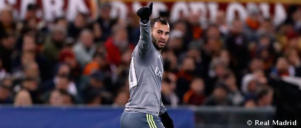
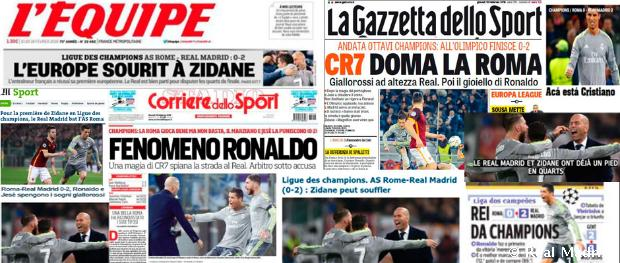
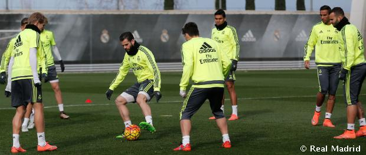
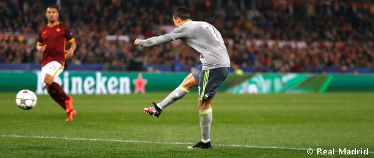
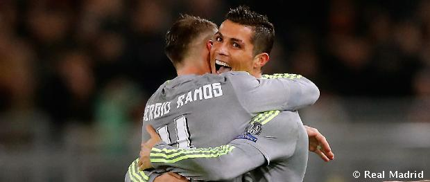

|
Official News |


|
|
|
Official News |
|
Entrenador del Real Madrid, Zinedine Zidane, se mostró muy satisfecho con la victoria de su equipo en Roma: “Nada está cerrado en el fútbol. Estamos contentos con el resultado porque no es fácil ganar aquí 0-2. Hay que jugar la vuelta. Hoy vamos a dormir contentos, a partir de mañana hay que pensar en el partido de Liga de este domingo contra el Málaga y ya veremos qué pasa en la vuelta, pero no está cerrada la eliminatoria”.
“Siempre vamos a tener partidos complicados fuera y hoy lo hemos tenido. Hemos jugado mucho mejor que los otros de fuera, pero siempre va a ser más difícil que en el Bernabéu. Hoy era un partido importante porque es una eliminatoria y hemos logrado mantener la portería a cero y marcar goles”.
|

A LOOK AT JESÉ FIRST GOAL IN THE CHAMPIONS LEAQUE"I really wanted to score in this competition and I am very happy", he stated.

"THE MAGICAL CR7 PAVES THE WAY FOR REAL MADRID"The international press highlight Real Madrid's triumph in Rome and an excellent display from Cristiano Ronaldo.

RECOVERY SESSION AFTER THE VICTORY IN ROME |

CRISTOANO RONALDO´S GOALSCORING FEATS EXTENDED RIGHT ACROSS EUROPEAway from the Bernabéu he has scored at 20 Champions League grounds.

RONALDO AND RAMOS: 50WINS IN THE CHAMPIONS LEAGUE WITH REAL MADRIDThe forward has scored 74 goals with the Whites in the competition. |